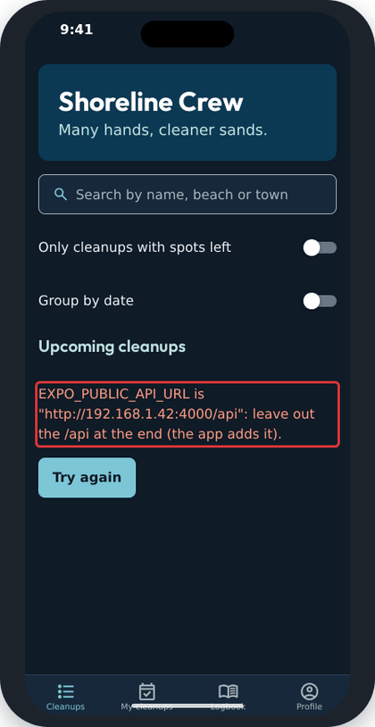

📶 Lesson 5.1: Reaching the API from a Phone
Since Lesson 1.3, Shoreline Crew has had a quiet secret: on your phone it has never shown a single cleanup. Every list, picture and sign-in you built came to life in the web preview, while Expo Go on the phone said "Could not reach the server". Today the phone joins the crew. By the end of this lesson you will hold your phone, see the week's cleanups with their beach pictures, and sign in as Theo, a real volunteer account, over your own Wi-Fi.
🎯 Learning Objectives
By the end of this lesson, you will be able to:
- Explain what
localhostmeans on a computer, a phone, an Android emulator and an iOS Simulator, and pick the right API address for each - Open shoreline-api to your network with
--host, find your computer's network address, and test it before the app is involved - Point the app at an address through
EXPO_PUBLIC_API_URLper device, and rebuild the bundle so the change takes effect - Say why a phone app needs no CORS while the web preview does, and why the API's picture addresses work on every device
- Make the HQ's typed client name the address that failed and suggest a fix, and add a connection check you can use on any device
- Get past Windows and WSL networking, firewalls and Wi-Fi that keeps devices apart
📦 Code for this lesson
Starting code: lesson-15-start.zip · Finished code: lesson-15-end.zip. Each folder has a README with the commands to run it.
In This Lesson
👋 Welcome: The Phone Joins the Crew
The HQ web app never had this problem. Its browser, its API and you were all on one computer, so http://localhost:4000 was simply "this computer". A phone is a second computer, in your hand, talking over Wi-Fi. It has its own localhost, and shoreline-api is not on it. That is the whole reason the phone has been showing an error since Lesson 1.3, and fixing it properly is mostly about addresses, not code.
By the end of today:
- You know which address reaches the API from the web preview, the iOS Simulator, the Android emulator and a real phone, and why each one differs.
- shoreline-api listens on your network with
--host, and you have tested it from the phone's own browser before the app gets involved. - The app reads the right address from
.env.local, and you know how to switch it per device. - The client you copied from the HQ says which address failed and what to try on this kind of device, and Profile has a Check the connection button.
- You sign in as Theo on the phone, and the links from Lesson 4.4 open real cleanups.
Why it matters for your work: "it works on my machine but not on the phone" is the first wall every mobile developer hits, and the people who can say why (which address, which network, which firewall) are the ones teams send it to. The same thinking applies later to staging servers, cloud APIs and the Wi-Fi at a client's office.
Why it matters for the volunteers: on a beach the app will run on mobile data, far from your desk. Today's habit of naming the address and saying what to try is what turns "Something went wrong" into a message a volunteer, or a teammate helping them, can act on.
🌱 A different kind of lesson
Most of today's work happens outside your editor: in terminals, network settings and a phone's browser. If something refuses to connect, that is not a sign you are bad at this. Networks hide what they do, and every developer has lost an afternoon to a firewall. Today you get a method: test one link of the chain at a time, and read what each tool tells you.
🏠 Where Is localhost?
localhost (and its number, 127.0.0.1) always means "the device this code is running on". It never travels. So the same EXPO_PUBLIC_API_URL=http://localhost:4000 points at different machines depending on where the app runs:
| The app runs in | There, localhost is | Address that reaches your API | Start the API with |
|---|---|---|---|
| The web preview (your computer's browser) | Your computer | http://localhost:4000 | node server.ts |
| iOS Simulator (on a Mac) | The Mac: the Simulator shares its network | http://localhost:4000 | node server.ts |
| Android emulator | The emulator, a separate virtual phone | http://10.0.2.2:4000: the emulator's built-in name for your computer | node server.ts |
| Expo Go on a real phone, same Wi-Fi | The phone | http://192.168.1.42:4000: your computer's address on the Wi-Fi (yours will differ) | node server.ts --host |
The web preview row is what you have used all along (measured). The Simulator and emulator rows come from Apple's, Google's and Expo's documentation: the course could not run either here, so check them on your own machine. The phone row is today's main job, and the computer's half of it was measured here: the API listening with --host and answering on the computer's network address.
💡 Mental model: the meeting point
Every cleanup has a meeting point, and how you describe it depends on who is asking. To a volunteer already in the car park, "over here" is enough. To someone driving in from Calder Bay, you give the road and the landmark. localhost is "over here": perfect for the web preview, which stands next to the API on your computer, and useless to a phone, which is "driving in" over Wi-Fi. The API is in the same place either way; only the directions change. Today you write the right directions for each device.
A phone also needs your computer to accept visitors. By default shoreline-api listens only on localhost, so even with the right address a phone would be turned away at the door. That is what --host changes.
🚪 Opening the API to Your Network
A server chooses which network addresses it listens on. node server.ts listens on localhost only: programs on your computer can reach it, other devices cannot. node server.ts --host listens on every address your computer has (written 0.0.0.0), including its Wi-Fi address, and prints that address for you:
node server.ts --hostExpected output
Shoreline Crew API running at http://localhost:4000/api
on your network: http://192.168.1.42:4000/api
sample sign-in: maya.okafor@example.com (organizer) or theo.nakamura@example.com (volunteer), password shoreline-demo
Press Ctrl+C to stop.The on your network line is the address a phone on the same Wi-Fi uses (yours will differ; a computer with several network connections may print more than one line, and the Wi-Fi one usually starts with 192.168. or 10.). Metro prints the same computer address under its QR code, which is how Expo Go found your project back in Lesson 1.2:
Expected output
env: load .env.local
env: export EXPO_PUBLIC_API_URL
Starting project at ~/shoreline/shoreline-crew
...
› Scan the QR code above to open in Expo Go.
› Metro: exp://192.168.1.42:8081
› Web: http://localhost:8081
...The part between exp:// and :8081 is your computer's address; the API is at the same address on port 4000. If you prefer to ask your computer directly: on Windows, ipconfig lists an "IPv4 Address" under your Wi-Fi adapter; on a Mac, ipconfig getifaddr en0 usually prints the Wi-Fi address; on Linux, hostname -I prints the computer's addresses (these come from each system's documentation; the two lines above are what the course measured).
Test the road before the app drives on it
Before touching the app, prove the API answers on that address. From the computer itself, with the API started with --host:
curl http://192.168.1.42:4000/api/healthExpected output
{
"ok": true,
...
}/api/health is a tiny endpoint that answers ok and the date the sample data is built around (the line left out above). In PowerShell, type curl.exe instead of curl, because curl on its own is a different PowerShell command. Started without --host, the same request was refused straight away (measured: curl reported Connection refused), while http://localhost:4000/api/health still worked: the API was running, but not listening on that address.
Then the real test: open http://192.168.1.42:4000/api/health (with your address) in the phone's browser. If the phone shows the same little JSON, the network path works and anything left is in the app. If it spins or fails, no change to the app can help: look at the Wi-Fi, the firewall and WSL (Windows, WSL, Firewalls and Fussy Wi-Fi). This one check splits every connection problem in half, and it is the step experienced developers do first.
🛑 --host opens the door to everyone on the Wi-Fi
With --host, any device on your network can use the API, which is the point. shoreline-api holds only sample data and demo passwords, but treat the habit seriously: use it on networks you trust (home, not a café), stop the API with Ctrl+C (also Ctrl+C on a Mac) when you are done, and never start a real server with real data this way on a public network.
🔀 One Variable, Many Devices
The app learns the address from EXPO_PUBLIC_API_URL in .env.local, as in Lesson 1.3. Remember the rule from that lesson: the value is copied into the JavaScript bundle when Metro builds it. Two consequences matter today:
- Change the file, restart Metro with
--clear. Saving.env.localdoes not reach a running app. Stop Metro and runnpx expo start --clear; the phone then downloads a fresh bundle with the new address. - One Metro, one address. The phone and the web preview get bundles built from the same
.env.local, so they use the same address.
The second point sounds like a problem, but it is good news. With the API started with --host, the course measured the web preview using the computer's network address too: it loaded the cleanups and their pictures from http://192.168.1.42:4000 (shown with the course's example address) without a single error. So while a phone is in the game, keep your computer's network address in .env.local, and the phone and the web preview both work. On a web-preview-only day, localhost is fine.
| You are testing on | EXPO_PUBLIC_API_URL in .env.local |
|---|---|
| The web preview only, or the iOS Simulator | http://localhost:4000 |
| The Android emulator only | http://10.0.2.2:4000 (or your computer's network address, if the API runs with --host) |
| A phone (plus the web preview, if you like) | http://192.168.1.42:4000 with your computer's address, API with --host |
Your computer's network address can change: home and office Wi-Fi give out addresses as devices join, and another network means another address. When the phone suddenly cannot connect after a weekend away, compare the address in .env.local with the one Metro prints today.
Switching for one session
Editing the file is the everyday way. For a quick switch, say ten minutes on the Android emulator, a variable set in the terminal wins over the file. The course measured it: a web export built with .env.local saying localhost and EXPO_PUBLIC_API_URL=http://10.0.2.2:4000 set in the shell contained only the 10.0.2.2 address.
EXPO_PUBLIC_API_URL=http://10.0.2.2:4000 npx expo start --clearIn PowerShell the variable is set first, and stays set in that window until you close it (or remove it with Remove-Item Env:EXPO_PUBLIC_API_URL):
$env:EXPO_PUBLIC_API_URL = "http://10.0.2.2:4000"
npx expo start --clearYou can tell which value won from Metro's first lines. With the value from the file, Metro starts with env: load .env.local and env: export EXPO_PUBLIC_API_URL. With the shell variable set, those two lines were missing (measured):
Expected output
Starting project at ~/shoreline/shoreline-crew
Using src/app as the root directory for Expo Router.
React Compiler enabled
Starting Metro Bundler
...Finally, make the next person's life easy. .env.example is the file that is committed, so it is where the table above belongs. Step 4 of the project rewrites it.
🌐 No CORS on a Phone, and Pictures That Follow
In the HQ course, CORS was the browser's rule that a page from one origin may read answers from another origin only if the server says so in an Access-Control-Allow-Origin header. shoreline-api says so for pages on http://localhost: any port, which is why the web preview works. A phone app is not a web page: Expo's native fetch sends no Origin header and does not look for the answer header. The course checked what the API sends back for a request to the computer's network address:
| The request comes from | Origin sent | Access-Control-Allow-Origin in the answer (measured) | Result |
|---|---|---|---|
| Shoreline Crew in Expo Go (native fetch) | none | none | Works: CORS is a browser rule, and there is no browser |
| The web preview on your computer | http://localhost:8081 | http://localhost:8081 | Works (measured with the LAN address too) |
The web preview opened on another device, at http://192.168.1.42:8081 | http://192.168.1.42:8081 | none | Blocked by that device's browser |
So the phone needs nothing from CORS, and the web preview is for your computer's own browser. That last row is a mistake worth knowing (Common Mistakes): the web preview is not a way to put the app on a phone. Expo Go is.
Pictures follow the address
Lesson 2.3 showed site pictures from URLs inside the API's answers. Would a phone get http://localhost:4000/images/…, an address that does not work there? No: the API builds each picture's URL from the address the request arrived at. Asked at the network address, it answered (measured):
curl http://192.168.1.42:4000/api/sitesExpected output
...
"url": "http://192.168.1.42:4000/images/sites/pelican-point.jpg",
"url": "http://192.168.1.42:4000/images/sites/driftwood-cove.jpg",
...Asked at localhost, the same list says http://localhost:4000/images/…, and a request that arrived as 10.0.2.2:4000 got http://10.0.2.2:4000/images/… (all measured). The pictures always use whichever address worked for the list. That is why Lesson 2.3 promised that this lesson needs no picture code: get the address right once, and everything inside the answers follows.
🧭 A Client That Knows About Addresses
The client you adapted from the HQ in Lesson 1.3 already turns a failed request into a NetworkError, and describeError words it as "Could not reach the server. Check that shoreline-api is running, then try again." On a computer that was the whole story. On a phone it is not enough, because the most common cause is not a stopped API but a wrong address, and the message does not even say which address it tried. Three small changes make the client a better crew-mate:
| Change | Before (the Lesson 4.4 code, measured) | After (measured in the web preview) |
|---|---|---|
Check the address before sending anything (AddressError) | http://localhost:4000/api or a trailing / asked the API for /api/api/events or //api/events: "Nothing was found at this address. Check the link." | "EXPO_PUBLIC_API_URL is "…/api": leave out the /api at the end (the app adds it)." A trailing / is simply removed |
Remember which address failed (NetworkError.address) | "Could not reach the server. Check that shoreline-api is running, then try again." | "Could not reach the server at http://localhost:4000. Check that shoreline-api is running, then try again." |
Advice for this kind of device (addressAdvice + Platform.OS) | The same words on every device | On Android with localhost: "On Android, localhost is the device itself. Put your computer's network address in .env.local (10.0.2.2 on the emulator)." |
The advice for each device comes from a small function with no React and no fetch in it, so the course ran it directly with Node for every address and platform (the Android sentence above is its real output; on a phone it should appear exactly so). And Profile gets a Connection section: which address this build talks to, and a button that asks the API's /api/health for an answer right now. When a volunteer says "the app shows nothing", the first question is "what does Connection say?"
The client stays the HQ's in spirit: the same ApiError, NetworkError and describeError shapes, the same type guards, now with one more guard (isHealth) for one more answer. What is new is phone knowledge: which addresses mean "this device", and that Platform.OS says which device the app is on. Steps 5 to 7 of the project build it.
🧱 Windows, WSL, Firewalls and Fussy Wi-Fi
When the phone's browser test fails, the problem is between the phone and your computer. These are the usual suspects, roughly in order of how often they bite.
Windows with WSL 2
If you run the course's commands inside WSL (Linux on Windows), WSL's default networking (NAT) gives Linux its own private address, often starting 172., that only Windows can reach. Expo then prints that 172.… address under the QR code, and the API's on your network line shows it too: a phone cannot reach either. You have three ways out (from Microsoft's and Expo's documentation; see also Troubleshooting: WSL):
- Run Node in Windows instead. Install Node for Windows and run the API and Metro from PowerShell in a Windows folder. Simplest, and nothing special to configure.
- Turn on mirrored networking (Windows 11, version 22H2 or newer): WSL then shares Windows' own addresses. Create or edit
.wslconfigin your Windows user folder (%UserProfile%), then runwsl --shutdownin PowerShell and open WSL again. - Use the Android emulator on Windows, which reaches your computer at
10.0.2.2whatever WSL does.
# %UserProfile%\.wslconfig (Windows): WSL shares Windows' network addresses
[wsl2]
networkingMode=mirroredThe course's own machine runs WSL in mirrored mode (wslinfo --networking-mode printed mirrored), and there the API and Metro both printed the computer's real Wi-Fi address, the one the phone's browser test needs. Microsoft's documentation also describes a separate Hyper-V firewall for WSL in mirrored mode; if the phone still cannot connect, the next item applies to you twice.
Firewalls
Your computer's firewall decides which visitors get in. The first time Node listens on the network, Windows and macOS usually ask whether to allow it: allow it on private networks (your home Wi-Fi), not public ones. If you said no, or never saw the question, allow Node.js (or ports 8081 for Metro and 4000 for the API) in Windows Security's firewall settings, or in macOS's Network settings under Firewall. The exact menus change between system versions, so follow your system's help if the names differ.
Wi-Fi that keeps devices apart
Many guest, school, office, hotel and café networks put every device in its own bubble ("client isolation"), so the phone and the computer cannot see each other even with the right address. You cannot fix that from your side. Options: use your home network; turn on your phone's hotspot and connect the computer to it (then use the address your computer gets on the hotspot); use the Android emulator; or develop in the web preview for the day. npx expo start --tunnel can carry Metro's traffic through the internet, but only Metro's: the API would still need an address the phone can reach, so it does not solve today's problem on its own.
The iPhone's Local Network permission
iOS asks the first time an app talks to devices on your local network. According to Apple's and Expo's documentation, Expo Go needs that permission to reach Metro and the API: if you tapped Don't Allow, turn it on in Settings, Privacy & Security, Local Network, Expo Go. Android has no such switch for local addresses in Expo Go.
📱 On your phone: plain http:// is fine for now
shoreline-api speaks plain http://, not https://. Expo Go and development builds allow that for local development, according to Expo's documentation. Store builds are stricter: Android release builds block plain http by default, and iOS requires secure connections unless the app declares exceptions. A real Shoreline Crew would talk to an https:// server; Module 9 comes back to this when you make builds.
⚠️ Common Mistakes
Network mistakes are frustrating because nothing crashes: the app just waits, then says it could not connect. Each mistake below was made on purpose with the finished project and quoted as the tools showed it, except where a phone is needed (said so).
⚠️ Leaving localhost in .env.local for a phone
The web preview works, so it feels finished. On a phone, the request goes to the phone itself. With today's client, the Cleanups tab on an Android phone should say (the advice text is the function's real output; the course could not show it on a phone):
Expected output
Could not reach the server at http://localhost:4000. On Android, localhost is the device itself. Put your computer's network address in .env.local (10.0.2.2 on the emulator).On an iPhone the second sentence reads "On a phone, localhost is the phone itself (only the iOS Simulator shares your computer's)." Put your computer's network address in .env.local and restart Metro with --clear.
⚠️ The right address, but the API started without --host
The address is correct and the API is running, yet nothing connects: without --host it listens on localhost only. curl from the computer says Connection refused, and the web preview, built with the network address, showed:
Expected output
Could not reach the server at http://192.168.1.42:4000. Check that shoreline-api is running (with --host for this address), then try again.(Measured with the course's ports, then shown with yours.) Stop the API and start it again with node server.ts --host.
⚠️ Copying the address with /api on the end
The API prints on your network: http://192.168.1.42:4000/api, and copying the whole thing is natural. The app adds /api itself, so the Lesson 4.4 code asked for /api/api/events, and the API answered 404 (No API route for GET /api/api/events.), which the screen showed as "Nothing was found at this address. Check the link.": true, and no help at all. Today's client checks the address first:

/api still on the end. The app checks the address before it sends anything and says what to fix, instead of a puzzling "Nothing was found at this address".Remove the /api, restart with --clear. A missing http:// gets the same treatment: EXPO_PUBLIC_API_URL is "localhost:4000": start it with http://, as in http://192.168.1.42:4000. (measured with the course's port, then shown with yours).
⚠️ Editing .env.local without restarting Metro
You fix the address, save, shake the phone and reload: still the old address. The bundle Metro already built has the old value inside it (Lesson 1.3 measured this on the development server). The Connection section on Profile shows the address the running bundle was built with, so it tells you at once. Stop Metro with Ctrl+C and run npx expo start --clear.
⚠️ Opening the web preview on the phone's browser
Metro serves the web preview, so http://192.168.1.42:8081 in a phone's browser seems like a shortcut. The page loads, but its requests to the API are blocked, because the page's origin is not localhost. The browser's console said (measured on the computer's own address, then shown with yours):
Expected output
Access to fetch at 'http://192.168.1.42:4000/api/events?when=upcoming&page=1&perPage=5' from origin 'http://192.168.1.42:8081' has been blocked by CORS policy: No 'Access-Control-Allow-Origin' header is present on the requested resource.
Failed to load resource: net::ERR_FAILEDand the screen showed "Could not reach the server". Read the console's words: "blocked by CORS policy", not "refused". The API answered; the browser refused to hand the answer to the page. Use Expo Go on the phone, and the web preview in the computer's browser.
🛠️ Project: Shoreline Crew on Your Phone
You open the API to your Wi-Fi, test the road from the phone's browser, point the app at your computer, teach the client about addresses, add a connection check to Profile, and then use Shoreline Crew on your phone for real. Work in the shoreline folder: the API commands run in shoreline-api, everything else in shoreline-crew. No packages to install today. If you have no phone with you, do Steps 1, 2 and 4 to 7 with the web preview (and the Android emulator if you have one), and come back to Steps 3 and 8 when you do.
Step 1: Find your computer's address (10 min)
- Connect your phone and your computer to the same Wi-Fi network (your home network, not a guest network).
- In
shoreline-crew, start Metro as usual withnpx expo startand read the line under the QR code:› Metro: exp://192.168.1.42:8081. The part betweenexp://and:8081is your computer's address. Write it down. - On Windows with WSL: if it starts with
172., stop here and choose one of the three ways out in Windows, WSL, Firewalls and Fussy Wi-Fi first. A172.address is WSL's private one, and a phone cannot reach it.
Leave Metro running; you restart it in Step 4.
Step 2: Open the API to your network (10 min)
In the terminal that runs shoreline-api, stop it with Ctrl+C, then start it so other devices can reach it:
node server.ts --hostCheck that the on your network line shows the same address as Metro's (plus :4000/api). If your system asks whether Node.js may accept connections, allow it on private networks. Then, from a third terminal on the computer, with your address:
curl http://192.168.1.42:4000/api/healthYou should see "ok": true (in PowerShell, curl.exe). If it says Connection refused, the API is not running with --host.
Step 3: Test the road from the phone's browser (5 min)
On the phone, open the browser (Safari, Chrome) and type http://192.168.1.42:4000/api/health with your address. You should see the same small JSON with "ok": true, and the API's terminal prints a GET /api/health 200 line for the visit.
- It works: the network is fine. Anything left is in the app, and the next steps handle it.
- It spins, then fails: the phone cannot reach the computer. Check the firewall, the Wi-Fi (guest networks keep devices apart) and WSL, in that order. A phone hotspot is a quick way to test whether your Wi-Fi is the problem.
📱 On your phone
The course could not hold a phone, so this step and Step 8 come from the Expo, Apple and Android documentation; the computer's half (the API listening on the network address and answering it) was measured. Some phone browsers try https:// first and complain about the connection: type the http:// yourself.
Step 4: Point the app at your computer (15 min)
First, let .env.example (the committed file) tell the next person which address each device needs. Replace its contents:
# Where the app finds shoreline-api. Copy this file to .env.local and change it there,
# then restart Metro with: npx expo start --clear
# Web preview, iOS Simulator: http://localhost:4000
# Android emulator: http://10.0.2.2:4000
# Expo Go on a phone: your computer's address, such as http://192.168.1.42:4000
# (start the API with: node server.ts --host)
EXPO_PUBLIC_API_URL=http://localhost:4000Then edit .env.local (your machine's file, not committed) so the one line uses your computer's address:
EXPO_PUBLIC_API_URL=http://192.168.1.42:4000No /api at the end and no space around the =. Now stop Metro with Ctrl+C and start it again without its cache, so the new value goes into the bundle:
npx expo start --clearPress w: the web preview should still show the cleanups, now fetched from your network address (measured, as long as the API runs with --host). If you only have the Android emulator today, use http://10.0.2.2:4000 instead and press a.
Step 5: Addresses the client understands (15 min)
Create src/api/address.ts. It has no React and no fetch in it, only knowledge about addresses, so it is easy to read and to check:
// Which address reaches shoreline-api depends on where the app runs (new: the HQ only ever ran
// in the browser next to the API). The meeting point is the same; the directions differ.
import type { PlatformOSType } from 'react-native';
/** EXPO_PUBLIC_API_URL is missing or written wrongly: no request can work until it is fixed */
export class AddressError extends Error {
constructor(message: string) {
super(message);
this.name = 'AddressError';
}
}
/** The host part of an address, such as "192.168.1.42" in http://192.168.1.42:4000 */
export function hostOf(address: string): string | null {
const match = /^https?:\/\/(\[[^\]]+\]|[^/:?#]+)/i.exec(address);
return match === null ? null : match[1].toLowerCase();
}
/** What is wrong with the address in .env.local, or null when it is written correctly */
export function addressProblem(address: string): string | null {
if (address === '') {
return 'EXPO_PUBLIC_API_URL is not set: copy .env.example to .env.local, then restart Metro.';
}
if (hostOf(address) === null) {
return `EXPO_PUBLIC_API_URL is "${address}": start it with http://, as in http://192.168.1.42:4000.`;
}
if (/\/api\/?$/.test(address)) {
return `EXPO_PUBLIC_API_URL is "${address}": leave out the /api at the end (the app adds it).`;
}
return null;
}
// Names that always mean "this device itself"
const loopbackHosts = ['localhost', '127.0.0.1', '[::1]'];
/**
* What to try next when a request to `address` got no answer, for the platform the app runs on.
* The client adds it to "Could not reach the server" (describeError).
*/
export function addressAdvice(address: string, platform: PlatformOSType): string {
const host = hostOf(address);
const local = host !== null && loopbackHosts.includes(host);
if (platform === 'web') {
// The web preview runs in your computer's browser, next to the API
if (host === '10.0.2.2') {
return '10.0.2.2 works only inside the Android emulator: the web preview uses localhost.';
}
return local
? 'Check that shoreline-api is running, then try again.'
: 'Check that shoreline-api is running (with --host for this address), then try again.';
}
if (local) {
return platform === 'android'
? `On Android, ${host} is the device itself. Put your computer's network address in .env.local (10.0.2.2 on the emulator).`
: `On a phone, ${host} is the phone itself (only the iOS Simulator shares your computer's). Put your computer's network address in .env.local.`;
}
if (host === '10.0.2.2') {
return platform === 'android'
? 'Check that shoreline-api is running, then try again. (10.0.2.2 works on the emulator, not on a phone.)'
: "10.0.2.2 works only inside the Android emulator. Put your computer's network address in .env.local.";
}
return 'Check that shoreline-api is running with --host and that this device is on the same Wi-Fi as your computer, then try again.';
}AddressErroris a separate error class for "the app was built with a wrong address", sodescribeErrorcan tell it apart from a network failure and from the API's own errors.hostOfpulls the host out with a regular expression rather thannew URL(): it returnsnullfor an address withouthttp://instead of throwing, and needs nothing from the runtime.addressProblemcatches the three mistakes you can spot without sending anything: no address, nohttp://, and the API's/apicopied along.addressAdvicetakes the platform as a parameter, typed with React Native'sPlatformOSType('ios' | 'android' | 'web' | …). Passing it in, instead of readingPlatform.OSinside, is what let the course run this function for every device on a computer.
Step 6: Errors that name the address (10 min)
Now src/api/client.ts uses it. At the top, import Platform and the new helpers, and the DateString type for the health answer:
// Data from the API is unknown until a check proves its shape.
+import { Platform } from 'react-native';
+
+import { AddressError, addressAdvice, addressProblem } from '@/api/address';
import type {
ApiErrorBody,
CleanupEvent,
CleanupEventDetail,
+ DateString,
ErrorCode,A type guard for /api/health, next to the other guards, in the same style as the HQ's:
+/** What GET /api/health answers: the API is up, and the date it builds its sample data around */
+export interface Health {
+ ok: true;
+ today: DateString;
+}
+
+function isHealth(value: unknown): value is Health {
+ return isRecord(value) && value.ok === true && typeof value.today === 'string';
+}
+
function isApiErrorBody(value: unknown): value is ApiErrorBody {NetworkError remembers the address, and describeError learns two things: an AddressError says exactly what to fix, and a network failure names the address and adds the advice for this platform:
export class NetworkError extends Error {
- constructor(cause: unknown) {
- super('Could not reach the API', { cause });
+ // The API address the request went to, so the message can say which one did not answer
+ readonly address: string;
+
+ constructor(cause: unknown, address: string) {
+ super(`Could not reach the API at ${address}`, { cause });
this.name = 'NetworkError';
+ this.address = address;
}
}
/** What to tell people when a request failed */
export function describeError(error: unknown): string {
+ if (error instanceof AddressError) {
+ // The app was built with a wrong address: say exactly what to fix (a developer's mistake)
+ return error.message;
+ }
if (error instanceof ApiError && error.status === 401) {
// ...
if (error instanceof NetworkError) {
- return 'Could not reach the server. Check that shoreline-api is running, then try again.';
+ // Which address, and what to try next on this platform (src/api/address.ts)
+ return `Could not reach the server at ${error.address}. ${addressAdvice(error.address, Platform.OS)}`;
}apiBaseUrl() checks the address, drops a trailing slash, and is exported so Profile can show it. request() passes the address to NetworkError:
-function apiBaseUrl(): string {
+/** The API's address, from .env.local (the one this bundle was built with) */
+export function apiBaseUrl(): string {
// Expo copies EXPO_PUBLIC_ variables into the bundle when Metro builds it (rewritten)
- const url = process.env.EXPO_PUBLIC_API_URL;
- if (url === undefined || url === '') {
- throw new Error('EXPO_PUBLIC_API_URL is not set: copy .env.example to .env.local');
+ const url = process.env.EXPO_PUBLIC_API_URL ?? '';
+ const problem = addressProblem(url);
+ if (problem !== null) {
+ throw new AddressError(problem);
}
- return url;
+ return url.replace(/\/+$/, ''); // a trailing slash would make //api
}
// ...
async function request(path: string, init: RequestInit = {}): Promise<Response> {
- const url = `${apiBaseUrl()}/api${path}`;
+ const base = apiBaseUrl();
+ const url = `${base}/api${path}`;
// ...
- throw new NetworkError(error);
+ throw new NetworkError(error, base);Finally, the request for the health answer, above getSites:
+/** GET /api/health: a tiny answer that proves this device can reach the API */
+export function getHealth(signal?: AbortSignal): Promise<Health> {
+ return getJSON('/health', isHealth, signal);
+}
+
export function getSites(signal?: AbortSignal): Promise<Site[]> {Notice what did not change: every screen. The Cleanups list, the cleanup screen and the sign-in form already show describeError(error), so they all gained the better words at once. That is the payoff of the HQ's "one place turns errors into words" design.
Step 7: A connection check on Profile (15 min)
Create src/components/ConnectionCheck.tsx:
import { useState } from 'react';
import { StyleSheet, View } from 'react-native';
import { apiBaseUrl, describeError, getHealth } from '@/api/client';
import { AppText } from '@/components/AppText';
import { Button } from '@/components/Button';
import { spacing } from '@/theme/spacing';
type Check =
| { kind: 'idle' }
| { kind: 'checking' }
| { kind: 'connected'; ms: number }
| { kind: 'failed'; message: string };
// A wrong address on a Wi-Fi network can hang for a long time instead of failing: give up after this
const timeoutMs = 8000;
/** The address this build of the app talks to, or what is wrong with it */
function currentAddress(): string {
try {
return apiBaseUrl();
} catch (error) {
return describeError(error);
}
}
// Which API this app talks to, and a button that asks it for an answer right now
export function ConnectionCheck() {
const [check, setCheck] = useState<Check>({ kind: 'idle' });
async function run() {
setCheck({ kind: 'checking' });
const controller = new AbortController();
const timer = setTimeout(() => controller.abort(), timeoutMs);
const started = Date.now();
try {
await getHealth(controller.signal);
setCheck({ kind: 'connected', ms: Date.now() - started });
} catch (error) {
setCheck({ kind: 'failed', message: describeError(error) });
} finally {
clearTimeout(timer);
}
}
return (
<View style={styles.box}>
<AppText variant="heading" accessibilityRole="header">
Connection
</AppText>
<AppText>This app talks to shoreline-api at:</AppText>
<AppText selectable style={styles.address}>
{currentAddress()}
</AppText>
<Button
label={check.kind === 'checking' ? 'Checking…' : 'Check the connection'}
onPress={run}
disabled={check.kind === 'checking'}
/>
{check.kind === 'connected' && (
<AppText accessibilityLiveRegion="polite">
Connected: the server answered in {check.ms} ms.
</AppText>
)}
{check.kind === 'failed' && (
<AppText variant="error" accessibilityRole="alert">
{check.message}
</AppText>
)}
</View>
);
}
const styles = StyleSheet.create({
box: {
gap: spacing.sm,
},
address: {
fontWeight: '600',
},
});- A union for the check's state, as in the HQ: TypeScript lets the screen read
check.msonly whenkindis'connected'. - An eight-second timeout. A refused connection fails at once, but a request to an address that nobody answers can hang far longer (curl gave up on an unused address on the course's network after about three seconds; across networks it can take much longer).
AbortControllerstops the wait, the client turns the abort into aNetworkError, and the volunteer sees the advice. The course checked it with10.0.2.2in the web preview: the check gave up and showed "10.0.2.2 works only inside the Android emulator: the web preview uses localhost." - The address is
selectable, so you can copy it into a message to whoever is helping you. - Accessibility: the result line is a polite live region and the failure an alert, like the sign-in form's messages; the button is the usual 48-tall
Button, disabled with "Checking…" while it waits.
Then put it at the bottom of Profile, for guests and signed-in volunteers alike:
import { Button } from '@/components/Button';
+import { ConnectionCheck } from '@/components/ConnectionCheck';
import { Screen } from '@/components/Screen';
// ...
<Link href="/before-you-go" asChild>
<Button label="Before you go" />
</Link>
+ {/* Which API this build talks to: the first thing to check when a phone shows no cleanups */}
+ <ConnectionCheck />
</Screen>In the web preview, open Profile and press Check the connection:

http://192.168.1.42:4000 (yours will differ). On your phone it shows the same address, and the answer usually takes longer over Wi-Fi.Step 8: Shoreline Crew on your phone (15 min)
Scan Metro's QR code (Android: the Scan QR code button in Expo Go; iPhone: the Camera app), as in Lesson 1.2. Then walk through the app as a volunteer would:
- Cleanups: the list loads, with the beach pictures. Pull it down to refresh, scroll to load more (Lessons 3.1 and 3.2, finally with real data on a phone).
- A cleanup: tap Open on Weekend Cove. Try the platform's back gesture (Lesson 4.1).
- Profile, Connection: it shows your network address. Press Check the connection; the answer over Wi-Fi usually takes longer than in the web preview.
- Sign in as
theo.nakamura@example.comwith the passwordshoreline-demo. Profile shows Theo Nakamura. - Close Expo Go completely (swipe it away in the app switcher) and open the project again: Theo should still be signed in, because Lesson 4.3 kept the session in SecureStore, which the web preview cannot do.
- Share this cleanup on Weekend Cove: the phone's share sheet opens with the message and an
exp://link (Lesson 4.4). Send it to yourself and tap it. - Break it on purpose: stop the API with Ctrl+C, pull the list down to refresh, and read the message. Start the API again with
--hostand press Try again.
📱 On your phone
This walk-through follows the Expo documentation and the earlier lessons' code; the course's checks ran the same screens in the web preview against the API on its network address. Things that only a phone shows, such as the session surviving a restart, the share sheet and the pull-to-refresh spinner, are what earlier lessons promised for this moment. If one of them behaves differently on your phone, write down what you saw: it is exactly the kind of note a team's bug report needs.
Step 9: Check and commit (5 min)
npx tsc --noEmitnpx expo lintExpected output
env: load .env.local
env: export EXPO_PUBLIC_API_URLtsc prints nothing, and expo lint only the two env: lines. Then commit. .env.local stays out of Git as before; the new .env.example goes in.
🧭 For your own app
For your final project, write down where its data will come from during development (a local server like shoreline-api, a hosted test server, or both) and the address each device needs. Put that table in your project's .env.example, and decide where your app shows "which server am I talking to" so you can find it on a phone in ten seconds.
✅ Project Completion Checklist
- ☐ You know your computer's network address, and the API answers
/api/healthon it from the computer and from the phone's browser - ☐
.env.examplelists the address for each device, and.env.localholds the one you use, with Metro restarted with--clear - ☐
src/api/address.tschecks the address and gives advice per platform;describeErrornames the address that failed - ☐ Profile has a Connection section that shows the address and checks it, with an eight-second limit
- ☐ On your phone (or the emulator): the cleanups and their pictures load, and you can sign in as Theo
- ☐
npx tsc --noEmitprints nothing,npx expo lintonly theenv:lines, and the work is committed
🏋️ Hands-on Exercises
Optional, but recommended: each one takes five to fifteen minutes. Undo code changes afterwards (keep your .env.local); the next lesson starts from the project as Step 9 left it.
🏋️ Exercise 1: Predict the advice
Without running anything, write what the second sentence of the error would be for each pair, then check your answers against addressAdvice: http://localhost:4000 on an iPhone; http://10.0.2.2:4000 in the web preview; http://10.0.2.2:4000 on Android; http://192.168.1.42:4000 on Android.
💡 Hint
Follow the function from the top: is the platform 'web'? Is the host a "this device" name? Is it 10.0.2.2? Otherwise, the last line.
✅ Solution
The function's real output, run with Node for every pair:
| Address, platform | Advice |
|---|---|
localhost, iOS | On a phone, localhost is the phone itself (only the iOS Simulator shares your computer's). Put your computer's network address in .env.local. |
10.0.2.2, web | 10.0.2.2 works only inside the Android emulator: the web preview uses localhost. |
10.0.2.2, Android | Check that shoreline-api is running, then try again. (10.0.2.2 works on the emulator, not on a phone.) |
192.168.1.42, Android | Check that shoreline-api is running with --host and that this device is on the same Wi-Fi as your computer, then try again. |
The function cannot tell an iPhone from the iOS Simulator, or an Android phone from the emulator, so its words cover both honestly instead of guessing.
🏋️ Exercise 2: Ten minutes on the emulator address
Start Metro with EXPO_PUBLIC_API_URL set to http://10.0.2.2:4000 in the shell (One Variable, Many Devices), without editing .env.local. Predict what the web preview's Connection section shows, and what Check the connection does there. Then stop Metro and start it normally: which address is back?
💡 Hint
Which value wins, the shell's or the file's? And what can 10.0.2.2 mean to a browser on your computer?
✅ Solution
The shell's value wins (measured), and Metro leaves out its env: lines. Connection shows http://10.0.2.2:4000. In the web preview, the check waits until the eight-second limit, then says "Could not reach the server at http://10.0.2.2:4000. 10.0.2.2 works only inside the Android emulator: the web preview uses localhost." (measured with the course's port). On the Android emulator, the same build should connect. Restarted without the variable, the address from .env.local is back. In PowerShell, remember the variable stays set in that window until you remove it.
🏋️ Exercise 3: What day is it on the server?
/api/health also answers the date the sample data is built around. Show it in the connected line: "Connected: the server answered in 12 ms. Its date is …", with the date written like the cards write theirs.
💡 Hint
getHealth already returns a typed Health. Add the date to the 'connected' member of the union, and format it with formatDate from src/utils/format.ts, like the cards do.
✅ Solution
Four changes in ConnectionCheck.tsx (type-checked, linted and run in the web preview):
import { Button } from '@/components/Button';
+import { formatDate } from '@/utils/format';
// ...
- | { kind: 'connected'; ms: number }
+ | { kind: 'connected'; ms: number; today: string }
// ...
- await getHealth(controller.signal);
- setCheck({ kind: 'connected', ms: Date.now() - started });
+ const health = await getHealth(controller.signal);
+ setCheck({ kind: 'connected', ms: Date.now() - started, today: health.today });
// ...
- Connected: the server answered in {check.ms} ms.
+ Connected: the server answered in {check.ms} ms. Its date is {formatDate(check.today)}.The line then read "Connected: the server answered in 9 ms. Its date is" followed by the date in the cards' format. If a teammate starts the API with --today to rehearse a cleanup day, this line shows it.
🏋️ Exercise 4: Let Metro tell the app the address (Stretch)
Expo Go loaded the app from Metro, so in development the app already knows an address the phone can reach: Metro's. Write a function that builds the API's address from it, using Constants.expoConfig?.hostUri from expo-constants (already installed with the template). What should happen in the web preview, and in a store build?
💡 Hint
In Expo Go, hostUri is Metro's host and port, such as 192.168.1.42:8081. Keep the host, use the API's port. When there is no hostUri, return null and let .env.local decide.
✅ Solution
import Constants from 'expo-constants';
/**
* Development only: the API on the computer that runs Metro. Expo Go loaded the app from that
* computer, so its address (hostUri, such as "192.168.1.42:8081") is one the phone can reach.
*/
export function metroApiAddress(apiPort = 4000): string | null {
const host = Constants.expoConfig?.hostUri?.split(':')[0];
return host === undefined ? null : `http://${host}:${apiPort}`;
}It type-checks and lints in the project. In the web preview, the course measured hostUri as null (so the function returns null); in Expo Go, the Expo documentation describes it as Metro's address. A store build is not loaded from Metro at all, so it has no such address: this trick is for development only, and a real app reads its server's address from configuration (Lesson 9.1). That is why Shoreline Crew keeps EXPO_PUBLIC_API_URL as the one source, and you could use this function only as a fallback while developing.
🎯 Quick Quiz
🎯 Check Your Understanding
Question 1: .env.local says EXPO_PUBLIC_API_URL=http://localhost:4000, and the API runs on your computer. You open Shoreline Crew in Expo Go on an Android phone. What does the Cleanups tab show?
Question 2: You start the API with node server.ts (no --host) and put your computer's network address in .env.local. Even the web preview on the same computer cannot load the cleanups. Why?
Question 3: You fix .env.local, save it and reload the app on the phone. The Connection section still shows the old address. What is going on?
Question 4: The API sends no Access-Control-Allow-Origin header to requests without an Origin. Why does Shoreline Crew in Expo Go still get its data?
Question 5: Theo's phone loads the cleanups from http://192.168.1.42:4000. Which address do the beach pictures in the answer use?
❓ Common Questions at This Stage
Can I use localhost on the Android emulator after all?
Yes, with one extra command. Android's adb tool can forward a port from the emulator (or a phone connected by USB) to your computer: adb reverse tcp:4000 tcp:4000 makes localhost:4000 on the device reach port 4000 on the computer, according to Android's documentation. It has to be repeated when the emulator restarts, so 10.0.2.2 is the simpler habit; the course could not run the emulator here to measure either.
Why not put the address in the code, with Platform.OS === 'android' ? '10.0.2.2' : 'localhost'?
Because the platform does not tell you the device: an Android phone is not an emulator, and an iPhone is not the Simulator. A real phone needs your computer's network address, which is different on every network and for every learner. An address in .env.local is one line to change and never committed; an address in the code is a commit every time you change Wi-Fi.
Is --tunnel a way around all this?
Partly. npx expo start --tunnel sends Metro's traffic through a service on the internet, so Expo Go can load the app even when the Wi-Fi keeps devices apart (it asks to install a helper the first time). But only Metro goes through it. The app's requests to EXPO_PUBLIC_API_URL still need an address the phone can reach, and shoreline-api has no tunnel. A phone hotspot or the emulator is usually quicker.
Is it safe that the API address is visible inside the app?
Yes: an address is not a secret, and every app's servers can be found by watching its traffic. What must never be in an EXPO_PUBLIC_ variable is a secret, such as a private key or a password (Lesson 1.3). The volunteer's token stays in SecureStore, and the API decides what each token may do.
What changes when the API is on the internet instead of my computer?
Only the address, which becomes an https:// address the same on every device: no --host, no 10.0.2.2, no Wi-Fi rules. Module 9 sets up different addresses for development and production builds. Everything you added today still helps: an https:// server can be down too, and the Connection section shows which one the build talks to.
🌟 Going Further: Bonus Challenge
Make a one-page "Phone can't connect" checklist for your team, in the order of the chain: same Wi-Fi? Address in .env.local equals Metro's? Metro restarted with --clear? API started with --host? curl to the network address from the computer? /api/health in the phone's browser? Firewall, WSL, guest network? For each line, write the exact command or screen to look at and what "good" looks like. Then try it on a friend's setup: a checklist is only good if someone else can follow it.
📓 Learning Journal
Take five to ten minutes and add today's entry to your journal:
- Key concepts you learned today
- Techniques that clicked (and the ones that have not, yet)
- Questions or confusion to look up or bring to the next session
- Ideas to try on your own
- Progress and feelings: how did this lesson go for you?
✍️ This lesson's prompt: Draw the path of one request, from Theo's thumb on Check the connection to the API's terminal and back: the phone, the Wi-Fi, your computer's firewall, WSL if you use it, the API's --host, and the answer. Mark where each mistake from today would break the path, and which tool or screen would tell you.
📝 Lesson Summary
🎓 Key Takeaways
localhostmeans "this device": your computer for the web preview and the iOS Simulator, the device itself on a phone or the Android emulator- Addresses: web preview and Simulator
http://localhost:4000; Android emulatorhttp://10.0.2.2:4000; a phonehttp://YOUR-ADDRESS:4000withnode server.ts --host - Test the network before the app:
curlto the network address, then/api/healthin the phone's browser EXPO_PUBLIC_API_URLis copied into the bundle: change.env.local, restart withnpx expo start --clear; a shell variable wins over the file- Native apps send no
Origin, so CORS does not apply; the web preview belongs in the computer's own browser. Picture addresses follow the address the request used - Errors name the address and suggest a fix per platform; a Connection check shows which server a build talks to
| If you want to… | Go to |
|---|---|
| Look up the address for each device, and the API's options | API reference: Which address |
| Fix a phone that cannot connect, or WSL networking | Troubleshooting |
| Read Expo's guide to environment variables | Expo: Environment variables |
| Read Microsoft's guide to WSL networking | Microsoft: Accessing network applications with WSL |
| Read how the Android emulator reaches your computer | Android: Set up Android Emulator networking |
🏆 What You've Accomplished
- Shoreline Crew runs on your phone with real cleanups, pictures and a real sign-in, for the first time
- You opened a server to your network on purpose, tested it link by link, and know how to close it again
- You can give the right address to the web preview, a simulator, an emulator and a phone, and switch between them
- The client you copied from the HQ now explains network failures in words that point to the fix, on every screen at once
- You have a method for "it works on my computer but not on the phone" that you will use for the rest of your career
🔭 Looking Ahead
The phone has data now, but each screen still fetches it by hand with useEffect, and nothing notices when the app comes back from the background or the signal returns. In Lesson 5.2: TanStack Query on Mobile, the Query you know from the HQ takes over: caching, refetching when the app returns to the foreground (AppState) and when the connection comes back (NetInfo), and signing up for a cleanup, and cancelling, as mutations.
📋 Before the Next Lesson
- Make sure the phone (or the emulator) shows the cleanups, and commit your work
- Try the app on your phone away from the computer for a moment: turn on airplane mode, pull to refresh, and read the message. Then turn it off and try again. Next lesson makes the app notice by itself
- Look at the HQ's
src/api/queries.tsif you have it: next lesson adapts it - Write today's journal entry, with your request's path
🌱 Encouragement for the Journey
If the phone connected on the first try, enjoy it: it does not always happen. If it took you an hour of firewalls and Wi-Fi settings, you learned the more valuable lesson. Networking problems feel personal because the screen just says "no", but they always have a cause, and today you learned to walk the chain one link at a time until you find it. The next time a teammate says "the app works for me but not on my phone", you will be the calm one who asks, "What does Connection say?"